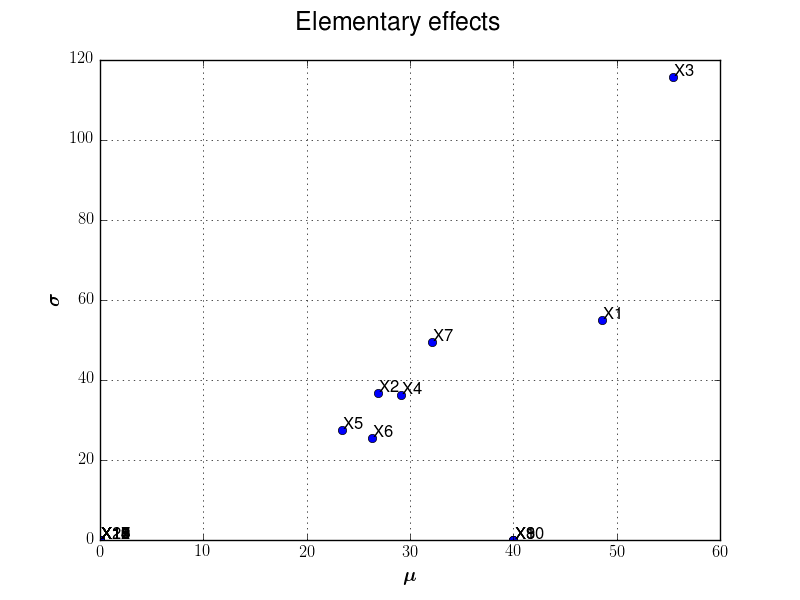
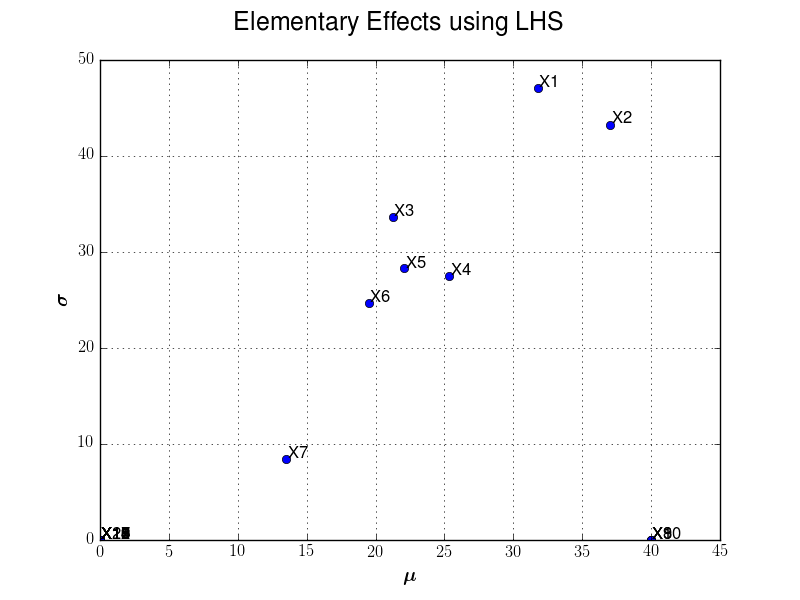

Examples¶
This section illustrates how to use the module to evaluate the Morris screening effects.
The illustration is done with the Morris function example, ie f: . Each input variable is uniform with bounds 0 and 1.
Example 1: Morris use-case and p-level input grid¶
To define the trajectories, we suppose that the box ![[0,1]^{20}](../_images/math/761c31121fe82effd5f3c16e4c0c1b5342ee854b.svg) is splitted into a p-level grid (p=5).
is splitted into a p-level grid (p=5).
We set the number of trajectories input variables are randomly to 10.
import openturns as ot
import otmorris
from otmorris.plot_sensitivity import PlotEE
# Number of trajectories
r = 10
# Define experiments in [0,1]^20
# p-levels
p = 5
morris_experiment = otmorris.MorrisExperimentGrid([p] * 20, r)
X = morris_experiment.generate()
f = ot.Function(otmorris.MorrisFunction())
Y = f(X)
# Evaluate Elementary effects (ee)
ee = otmorris.Morris(X, Y)
# Compute mu/sigma
mean = ee.getMeanAbsoluteElementaryEffects()
sigma = ee.getStandardDeviationElementaryEffects()
fig = PlotEE(ee)
fig.show()
We illustrate here after sensitivity graph issued from such analysis:
{kind=link}
Example 2: Morris use-case and LHS initial design¶
To define the trajectories, we first get an LHS design in the box of
We set the number of trajectories input variables are randomly to 10.
import openturns as ot
import otmorris
from otmorris.plot_sensitivity import PlotEE
# Number of trajectories
r = 10
# Define an LHS experiment of size 50
lhsSize = 50
bounds = ot.Interval(20)
lhsDesign = otmorris.MorrisExperimentLHS.GenerateLHS(bounds, lhsSize)
morris_experiment = otmorris.MorrisExperimentLHS(lhsDesign, r)
X = morris_experiment.generate()
f = ot.Function(otmorris.MorrisFunction())
Y = f(X)
# Evaluate Elementary effects (ee)
ee = otmorris.Morris(X, Y)
# Compute mu/sigma
mean = ee.getMeanAbsoluteElementaryEffects()
sigma = ee.getStandardDeviationElementaryEffects()
fig = PlotEE(ee, title="Elementary Effects using LHS")
fig.show()
We illustrate here after sensitivity graph issued from such analysis:
{kind=link}